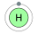

Hydrogen
Hydrogen is mainly used as rocket fuel for spaceships that transfer
resources and goods between Martian colonies and Earth. Each spacehip
launched from a colony will need a defined amount of hydrogen fuel
to reach Mars orbit, thus making hydrogen resource an essential part
of trade between the Red planet and Earth.
